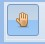
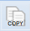
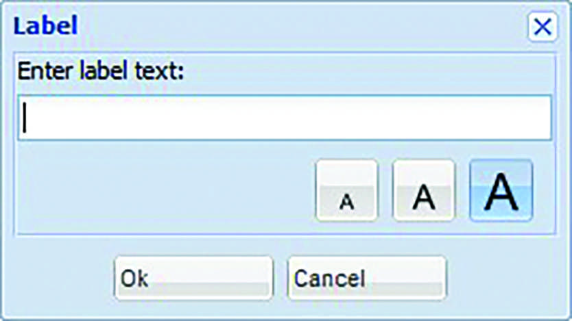
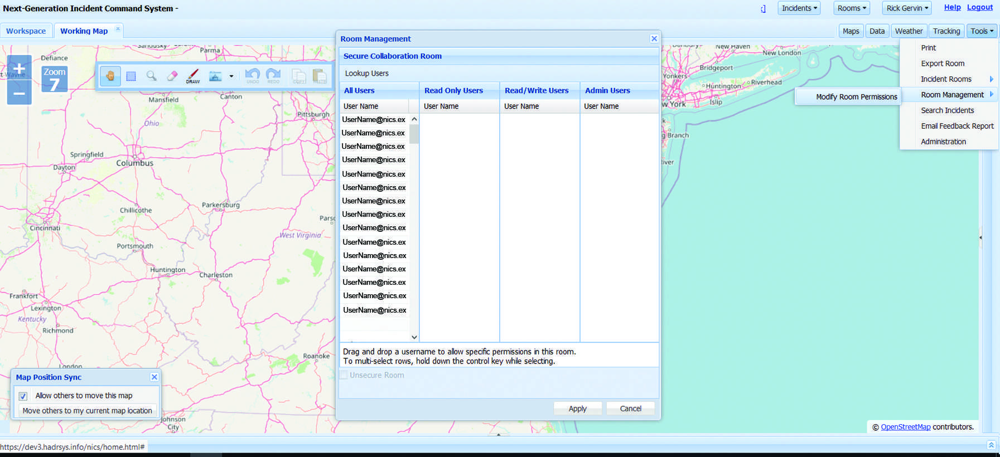

Section 1: System Access & User Interface
System Access
To access the NICS application, you must have a NICS account with a username and a password, which is obtained when you register and after the NICS administrator for your organization has approved your application online.
Once authorized, you can log in by providing your username and password in the appropriate areas. You can also request that your NICS password be sent to the email address you provided during registration by clicking on the Forgot Password link.
User Interface
- Main toolbar: Drawing and map marking tools. (See drawing in the map section)
- Map zoom level and zoom in and out buttons: You can use the plus or minus buttons to zoom in or out of the map. You can also use the scroll wheel on the mouse to achieve the same result.
- Clicking here opens the bottom panel where the chat, timeline, and notification features can be found.
- Incidents button: This button is where you can create an incident or select an incident that has already been created.
- The Rooms button: Where you can create working rooms or join a room.
- Maps button: This button gives the user multiple map option. Open Street, Bing Maps, US Topo Maps, and FAA Aeronautical Maps.
- The Data button: Store and manage data layers uploaded by GIS users.
- Weather button: This in an organizational tool used to organize weather data layers.
- Tracking button: Allows you to track individuals, data points, and equipment and plot them to a map layer.
- The Tools button: Allows you to print the map, export a room, view multiple incidents, modify room permissions, and access administration info.
- Work Space: Represents private user room where work is persisted across sessions and not visible to other users.
- ser Information: Contact info is located here. You can also update your account information.
- Clicking here opens the side panel.
Navigating the Map
NICS provides a variety of map tools for use in annotating your maps for your situational awareness. Primary map navigation is controlled using the zoom controls on the left side of the map region. Alternatively, the map tool bar contains zoom options as well as additional map navigation and annotation features. The various options are summarized in the following table.
| Function | Tool | Description |
|---|---|---|
| Zoom | Click + to zoom in. Click – to zoom out. Zoom number indicates the current zoom level. The higher the number, the more you are zoomed in. | |
| Zoom | Click and then draw a rectangular area on the map to zoom into that selected area | |
| Zoom | Mouse Wheel | Scroll up to zoom in on your mouse location Scroll down to zoom out on your mouse location |
| Pan (Navigation) |  | Also known as the Hand tool Click the pan icon, then click and drag the map to the desired area |
| Select Box | Click and then draw a box around a set of features you want to move or copy | |
| Erase | Scroll up to zoom in on your mouse location Scroll down to zoom out on your mouse location |
|
| Draw | Click to display drawing tools | |
| Apps | Click to access the Census, Weather, Geocode Location, and Share Workspace applications | |
| Undo | Click to undo the last action you performed on the map | |
| Redo | Mouse Wheel | Click to redo the last action you performed on the map |
| Copy |  | Select a feature or set of features, then click to make a copy on the clipboard |
| Paste | Mouse Wheel | Click to insert map items you copied to the clipboard |
Drawing is one of the primary methods of communication in NICS. When information needs to be transmitted quickly and efficiently, a sketch on the map is often the most effective.
To begin drawing, select the draw icon
from the main toolbar to access the draw panel.
| Tool | Function | Tips |
|---|---|---|
| Draw Markers | ||
| Draw Label | Click and then draw a rectangular area on the map to zoom into that selected area | |
| Rotate | ||
| Draw Vector Polygon | Use the down arrow to select an alternate shape | |
| Draw Circle | Use the down arrow to select an alternate shape | |
| Draw Triangle | Use the down arrow to select an alternate shape | |
| Draw Square | Use the down arrow to select an alternate shape | |
| Draw Hexagon | Use the down arrow to select an alternate shape | |
| Draw Line | Use the down arrow to select line properties | |
| Measure Distance | Use the down arrow to select measuring options | |
| Measure Area | Use the down arrow to select measuring options |
Adding Markers or Symbols
Different Agencies and Organizations use symbology and map markers to indicate different things. The draw marker feature allows you to quickly add your organization’s symbology to a map layer. In order to add markers or symbols to a map layer:
1. Select the Draw Marker icon from the Draw panel.
This will display all the available markers that are currently loaded in to NICS.
2. Click on a marker to select it and then click anywhere on the map to place it.
You can place an additional Marker on the map by clicking multiple times.
To reset the pointer, click on the HAND tool.
Note: All markers can be rotated on the map layer by using the rotate icon in the Draw Panel. (See Rotate section)
Marker Details

Information about the marker you have placed can be viewed by simply selecting the marker. Once selected, a Feature Detail window will open. You can also select lines, shapes, or labels. These details include: object type, user, last updated, layer number, and comments. Comments may be added using the Edit button. Photos may also be added using the Add Photo option.
Adding Labels
The Label tool enables you to put a text label anywhere on the map.

1. From the Draw panel, click
to display the Label window.
2. Type your label text and choose the font size.
3. Click OK.
4. Click the map where you want your text displayed.
Like a marker, you can place the text anywhere on the map. You may also place additional copies of the text on the map by clicking multiple times.
Rotate
Many markers are rotatable after being placed on the map. From the Draw panel, click
, then click on the marker you want to rotate. Use the guide to align your marker accordingly.
To reset the pointer, click on the hand tool.
Drawing Shapes
The shapes tool enables you to create a shape with a solid border and translucent center. Use the down arrow below the shapes tool to select the shape you wish to draw: polygon, circle, triangle, square, or hexagon.

Draw a polygon:
1. Click
, then click the map where you want the first line segment to begin.
(Alternatively, holding down the mouse button and dragging across the map causes the shape to automatically adjust to the mouse position.)
2. Release the mouse button to end a line segment.
3. Double-click to end the polygon.
To reset the pointer, click on the hand tool.
Draw a Circle:
1. Click
, then click the map where you want the center of the circle.
2. Drag the mouse until the circle is the size you need.
3. Click to end the circle creation.
Draw a triangle:
1. Click
Freehand & Update
While drawing, it is possible to free draw by holding down the shift key. You can also select the Freehand icon that opens once you click either the Line tool or the Polygon tool. This feature also works while drawing with the Vector Polygon tool.
Updating Polygon Shapes:
If you need to update an existing polygon shape, select the icon for the side panel.
1. Scroll the button nav at the top of the side panel by clicking the right arrow button until you see the feature details button.
2. Select the Feature Details button.
3. Select the Polygon feature you want to update.
4. Select the Edit Feature button at the top of the Feature Details panel.
You can now edit the polygon drawing.
The following edits can be made in the Feature Details panel.
• Change or add a description
• Change the stroke color (Outline color)
• Change the fill color
• Change the opacity
Once the polygon has been selected, a popup window with the current details about that feature will open. In this window, you can edit comments and add photos. If you need to add multiple comments to the selected feature, select the New button on the side panel under feature comments. This will allow you to add, view, and edit multiple comments.
While in the edit features window, you can also edit the shape of a drawn polygon by placing the mouse cursor over the polygon edge. You will see a blue circle appear on the edge of the polygon. You can move the edge to the desired location by clicking the mouse and dragging the cursor to the location you want, then releasing the mouse.
Note: Edit feature works best for editing polygon shapes and drawn polygons. Editing line drawings can be problematic.
Drawing Lines
The Line tool creates a new line wherever you draw on the map. Use the down arrow under the Line tool to select line options (i.e., thin, medium, thick, or dashed).
Click the map where you want the first line segment to begin. Drag the cursor until the line is the desired length. Release the mouse button to end a line segment, then double-click to end the line creation. To reset the pointer, click on the Hand tool.
Drawing Freehand:
Once you have selected the line option (thin, medium, thick, or dashed) select the freehand button on the Draw panel, this will allow you to freehand draw lines and polygons.
Click and hold down the mouse and draw. Once you’re finished drawing, release the mouse to end the line segment or polygon.
To reset the pointer, click on the Hand tool.
Measure
The measurement tool can be used to measure distance or area. In addition, the unit of measure (i.e., Imperial, Metric, or Nautical) can be selected.
Measure Distance:
1. Click
, then click the map where you want the first line segment to begin.
2. Drag the cursor until the desired length.
The distance will appear as the line segment is drawn.
If you need to find the distance of a winding road or border, you can use the Freehand button at the bottom of the Draw panel. This works in the same way as the Freehand Drawing tool.
Measure Area:
1. Click
, then click the map where you want the first line segment to begin. (Alternatively, holding down the mouse button and dragging across the map causes the shape to automatically adjust to the mouse position.)
2. Area is shown as cursor is dragged across the map.
3. Release the mouse button to end a line segment, then double-click to end the area.
To reset the pointer and the area, click on the Hand tool.
Application Folder
More information about a location on the map such as local weather, census data, or map grid coordinates can be obtained by opening the Application folder found on the main toolbar.
Click ,
to open the dropdown menu containing the four applications currently available.
1. Weather
2. Census
3. Geolocation
4. Share Workspace
5. Draw Search
Census
To obtain census data about a specific area, select the Census option in the application dropdown menu. Once in the Census app, you will need to create a census region.
1. Create a polygon by clicking the mouse at each point in the polygon.
2. Double click when the polygon is complete.
Results will open in a new Web browser tab and may take a few minutes to open.
Weather
To obtain weather data about a specific area, select the weather option from the application dropdown menu. Once in the weather app you will need to create a weather region.
1. Create a polygon over the area of interest by clicking the mouse to create each point in the polygon.
2. Double click when the polygon is complete.
The total area must be less than 1000 square miles. Results will open in a new Web browser tab.
Share Workspace
To share your workspace with others, click Share Workspace from the application dropdown menu.
1. The Share Workspace Application message will appear in the center of the screen.
2. Click ON to share your workspace with your current room.
3. Alternatively, click OFF to stop sharing.
Note: Additionally, when leaving the room, either by changing rooms, or closing the room, your workspace will no longer be shared.
Map Sync
When users in the same room wish to collaborate, it is very useful to make sure everyone is looking at the same place and with the same zoom. This can be accomplished through the Map Position Sync window which usually appears in the bottom left of your display.
If you wish to let other people move your map to their location and view, click Allow others to move this map checkbox. If you don’t want others to move your map without your permission, uncheck the box.
If you wish to take command of everyone’s map orientation and view, click Move others to my current map location.
Note: If it has been minimized and is not visible (i.e., the “X” in the upper right corner had been clicked), it can be reopened by clicking Show Map Sync Options from the Tools menu.
Drawing a Search Cone
The Search Cone is a search area based on the probability of position based on a last known coordinates and bearing to better send searchers to the right areas.
In order to draw a Search Cone, first select the application folder from the main tool bar and click on the Draw Search Cone.
1. When the popup window opens first select a proper CRS. This will allow you to select the center position of the search area by clicking on the locate button, then selecting the location on the map.

Note: The search cone radius Azimuth and delta will need to be entered before you click on the draw button.
2. Once you are satisfied with the Search Cone, click Add to Room.
Deleting Objects
All drawn polygons, lines, markers, labels, and shapes can be removed from a room as easily as they were added. Simply select the eraser tool from the main tool bar and then click on the object you wish to remove from the map or draw a bounding box around all of the features to be deleted.
A dialog box will open asking you to confirm that you wish to delete the select object from the room. Click Yes to delete or Cancel to return to the map without deleting the selected object.
Creating an Incident
NICS is organized by named incidents. Within each incident, there are separate collaboration areas called Rooms. These rooms are meant to separate functionality to allow individual teams to collaborate on their part of a larger incident. Rooms can be open to anyone or restricted to certain users.
Once you have logged into NICS, you will either need to join an incident that is already in progress per your organization’s standard operating procedures, or you will need to create a new incident.
1. Select the Incident button on the upper right hand corner of your screen.
2. A dropdown menu will open with the list of all available incidents to join or you can create a new incident.
Right now we will focus on creating a new incident.
3. Once you click on Create New Incident a popup window will appear.
4. Find the center point of the incident on the map and select the Locate button at the bottom of the popup window. Then mouse over the center point of the incident and click.
This will fill in the lat/long coordinates for you.
5. Name the incident and provide a detailed description of what’s happening at the incident site.
6. Select one or multiple incident type(s) from the scrollable list.
If you would like to restrict access to an incident, click on the Update Orgs button at the bottom of the popup window.
(A) A second popup will open where you can drag and drop the organizations you want into the enabled box.
(B) Select Close when finished.
Otherwise, if you do not use the “Update Orgs” functionality, the incident will be visible to all NICS users. All new incidents are automatically restricted to the owning organization if the “Restrict Incident” checkbox is chosen in the Administration panel for the organization. (See the section about editing an incident
1. Click the Create button at the bottom of the popup window to create the incident
Creating a Room
Once an incident has been created, persons with the proper permissions can create a room for their team or organization. This room will allow your organization/team to communicate with your own map and chat capabilities. Using the NICS mobile application, you can track your team in the field.
To create a room:
1. Select the Rooms button.
2. A drop down menu will open with a list of all available rooms.
3. At the top of the list, select the Create New Room button.
4. A popup window will open in the center of the screen with a list of room options to choose from, or you can name your room whatever you want by using the text box.
5. Once your room is named, click the Create button.
Your room is now created and open for all users to join.
Securing a Room
If you only want to have your organization or team have visibility into your room, you can secure it by selecting the Secure Room checkbox at the bottom of the Create New Room popup window before you create the room. A second popup window will open, allowing you to drag and drop usernames to allow specific permissions in this room. To multi-select rows, hold down the control key while selecting.
Select Apply to apply permissions. When modifying a room, the organization’s administrator and system super users cannot be removed.
Managing Rooms
If you need to manage a user’s permissions any time during an incident, you can select the Tools button to open the dropdown menu and select the Room Management button and Modify Room Permissions. This will open
he Room Management window, allowing you to add a user to the room, change a user’s permissions, look up a user, and secure or unsecure a room.
User/Organization Info
Once logged into NICS, you can review or change your user account information by selecting the button at the top right hand side of the screen with your name on it.
Once selected, a dropdown menu with the options Account Information and Change Organization will appear.
1. Select the Account Information.
2. A popup window will open providing the user with all their account information and contact information.
3. You can update this information as needed. If you can’t update this information, contact your organization’s administrator.
4. Once all your info is updated, click Submit at the bottom of the popup window.
Organization/System Users
You can have one or more organizations within NICS. An organization is a grouping of system users by function, location, etc. There are five official system user types:
| User Type | Description |
|---|---|
| NICS User | - Default user type – access is read/write - Can create incidents, draw on maps, chat, report, and upload data layers |
| GIS User | - NICS User plus rights to upload and manage data layers - Manages permissions and usage of maps, layers, geospatial data |
| Admin User | - Manages users, incidents, specific capabilities for an organization - Can be an admin in more than one organization - Can restrict permissions to rooms |
| Super User | - Organization administrator for every organization - Has full access to all organizations and users |
| Read-Only User | - View-only rights - Can only view rooms and chat - No edits |
To access the NICS application, you must have a NICS account with a username and a password, which is obtained when you register and after the NICS administrator for your organization has approved your application online.
A user can belong to any organization and have a specific role in that organization, but it is important to note that user organizations and system roles do not extend across workspaces. In the case of workspaces, the user needs to be added and enabled in the organization in each workspace.
Section 4: Data Layers
Many different types of data can be integrated into NICS and represented as a map layer. Some examples include: streets, parcels, zoning, flood zones, shopping centers, office buildings, demographics, etc. When these layers are placed on top of one another, trends and relationships often emerge enabling us to gain insight about relevant characteristics of a location.
With NICS, you can customize your view by overlaying different data layers in order to provide the combination of information required to allow users to make informed decisions.
Maps
Maps represent the base layers, while Data, Weather, and Tracking provide additional overlays to be added to the map.
There are several types of maps, and new map types are added regularly.
• Open Street Map
• Bing Aerial with Labels
• Bing Roads
• Bing Aerial
• US Topo – 7.5 min. Quadrangle Maps: USGS 7.5/15 mins. Seamless topographical maps
• FAA – Sectional Aeronautical Charts
Organizations can also add their own maps by adding them to data layers.
Data Layers
Data layers are the geo-information that can be placed on top of the base map layer. Layers are turned on and off by checking and unchecking boxes next to their names.

Data layers are organized in a tree file structure. NICS provides some general layers to every incident, and it is possible for authorized users to upload data from other sources, which will be located in the Upload Folder.

In order to access existing data layers in NICS, click on the Data button located on the right side of the application window. This will open a drop-down window with multiple folders to choose from. Open the folder to see the available layers included within the folder. To turn on a layer, simply select the check box next to the layer you want displayed.
In the image to the right, you can see local hospitals have been displayed on the map by turning on the data layer in the dropdown menu.
Import Data Layers
NICS also has the ability to upload dynamic data layers, such as WFS/WMS/ArcGIS, just to name a few. There are a few different steps required to upload different data layers; we will first look at WFS/WMS/ArcGIS.
1. First, select the Data button from the right side of the application window.
2. When the data layer folder window opens, select the Import Data button at the bottom of the window.
3. A window with all the import options will open. Select one of the first three options (WFS/WMS/ArcGIS) and click Add Data.
4. Enter a title and URL for the WFS/WMS/ArcGIS service in the blank entry fields that pop up. If the service is valid it will be added to the grid service list and ask if you would like the data source secured. If you select Yes, you can add a user name and password.
If the service is invalid, the editable fields are still displayed along with an error message.
Once you’ve selected the data service you want to use, the Layer to import drop-down dynamically populates once the service you selected has been registered. Clicking on another service in the table populates the drop-down with layers from that service.
5. Use the Layer to import drop-down to select the desired Layer.
6. Use the existing or enter a name in Display Name. This data layer name is ultimately shown in the Data tree.
7. (If desired) Enter a URL address to be used as a Legend for this data layer.
8. Set the Refresh Rate for the layer enabling all updates to automatically pull and display at the given interval.
9. (If desired) Select an organization to access this data layer. If you use the default (None), there are no restrictions on using this data layer, and it will be added to the Upload folder.
Note: Only the organization chosen in the drop-down box will be able to access the data layer from the Data tree.
10. (If desired) Select a room to access this data layer. If you use the default (None), there are no Room restrictions on using this data layer.
Note: If a room is selected, the data layer will only turn on when a user is in the specified room. To pick a room, the user must be in an incident when uploading a data layer.
11. Click Import Data Layer.
All imported layers are automatically placed in the Upload folder of the Data tree unless they were explicitly added to a room.
Upload Other Data Layers
To add (KMZ, KML, GPX, GeoJSON) data layer click Data from the buttons on the right side of the NICS screen. A list of data folders appears.
1. Click Import Data.
2. Click the desired static file type (KMZ, KML, GPX, GeoJSON) from the button list.
3. Use Browse to select the file to be imported.
Note: The file must have the proper file extension associated with the data layer type.
4. Enter a name in Create Display Name in NICS. This data layer name is ultimately shown in the Data tree.
5. The Refresh Rate only applies to any file that may contain a dynamic link (e.g., KML).
6. (If desired) Select an organization to access this data layer. If you use the default (None), there are no restrictions on using this data layer, and it will be added to the Upload folder.
Note: Only the organization chosen in the drop-down box will be able to access the data layer from the Data tree.
7. (If desired) Select a room to access this data layer. If you use the default (None), there are no Room restrictions on using this data layer.
Note: If a room is selected, the data layer will only turn on when a user is in the specified room. To pick a room, the user must be in an incident when uploading a data layer.
Click Upload.
Upload Shape Files
To add a shape file as a data layer, click Data from the buttons on the right side of the NICS screen. A list of data folders appears.
1. Click Import Data.
2. Click Shape File from the button list.
3. Browse and select a file for each file type associated with the shape file.
Note: The SLD file is optional.
4. Enter a name in Display Name. This data layer name is ultimately shown in the Data tree.
5. Click Upload.
The Shape files are uploaded and displayed as a WMS layer.
Upload Images as Data Layers
To add images as a data layer click Data from the buttons on the right side of the NICS screen. A list of data folders appears.
1. Click Import Data.
2. Click Image from the button list.
3. Enter a name in Create Display Name in NICS. This data layer name is ultimately shown in the Data tree.
4. Browse and select geotagged images that will be aggregated into one data layer and displayed on the map as points.
Note: When a user clicks on the points, the image displays in a popup window.
Click Upload.
Upload Mobile Tracking Info
To add mobile tracking information as a data layer, click Data from the buttons on the right side of the NICS screen. A list of data folders appears.
1. Click Import Data.
2. Click Breadcrumb from the button list.
3. Enter a name in Create Display Name in NICS. This data layer name is ultimately shown in the Data tree.
4. Click Lookup to search for a mobile user by name.
5. Enter a number into Hours Past to create a track for the desired number of past hours, or choose a time frame by clicking on the Date button which will open a Date/Time picker. Choose a Time from the dropdown at the top.
6. Checking the Segment checkbox connects the points for the breadcrumb.
7. Checking the Style checkbox allows you to style each location as directional arrow or a point.
8. Click Upload.
The layer is added to the Upload folder as a WFS layer. You can click each location point and display the time of that location in a popup window.
Tracking Teams
Upload GeoTIFF
Upload GeoRSS Feeds
Tracking Dropdown Menu
Right Click Options/Data Tree
When you are in the Data tree, which can be found by clicking on the Data button on the top right-hand side of the application window, you can right click on a Data layer or folder for more option.
Additional features:
Show Legend:
You can configure a URL on a data layer that should point to a graphic. Toggling Show Legend will create a popup/overlay on the map displaying that graphic. If there’s not a URL set, it’s grayed out.
Add to Room:
You can add this layer to show in a room you’re in. First you have to be in a room. The active room you’re in is the one the data will be added to. This way you can organize a handful of layers to be on in a room, but they won’t show elsewhere unless you toggle them on via the Data menu. There’s also a tab on the side panel, “Room Layers”, where you can manage these layers. Toggling it on/off within the room, setting the opacity, and setting whether or not mobile users should have the layer on. You can also remove the layers from the room here.
Folder Management:
If you have the permissions, admin or higher, you can create, rename, and delete folders in the Data menu. You can also move layers into folders by dragging and dropping them.
Export to GeoJSON:
If the layer is of a certain type, it’ll show Export to GeoJSON, so not all layers will show this option. You can exports the layer's content as GeoJSON to download.
Section 5: Management & Administration
Tools Dropdown Menu
Print the Map
Incident Rooms
Incident rooms provide a list of rooms that currently exist in this incident. You are able to add an overlay of that room (if you have permission) to any other room or workspace you’re in.
To access the incident rooms button select the Tools button from the upper right side of the screen. Click on the Incident Rooms button from the drop-down menu, and check the box next to the room you would like layered.
Room Management
See Managing Rooms in Section 3, page (26).
Search Incidents
Once logged into NICS, you are able to quickly search for other incidents by selecting the Tools button. When the drop-down window opens:
1. Select the Search Incidents button to open the Incident lookup window.
2. Type the name of the incident into the text box and click the Search button.
The bottom of the window will display all the like-named incidents.
3. Select the incident you want to join, and click the join button at the bottom of the window.

Email Feedback Report
Feedback reports are a critical tool for the development team to be able to correct bugs in the system. To submit a feedback report, select the Tools button on the right-hand side of the screen.
In the dropdown menu that opens, select the Email Feedback Report.Write a detailed description of the problem and click the OK button when finished.
Your report has been sent.
Administration
Enable / Disable Users
Archiving an Incident
Incident Type
Organization Capabilities
Section 6: Side Panel
Whiteboard Chat
Each collaboration room has an associated Chat whiteboard. Click on the bottom panel arrows to open the chat feature. It works like any other chat web chat room; simply type your message in the text line and press the Enter key or click on the Send button.
This chat message will be sent to all the users logged into the incident. You can private message an individual NICS users by opening the side panel clicking on the active users and selecting invite to private chat. The private chat will be listed in the chat tabs at the top of the chat room window.
Timeline
The timeline feature allows NICS users to play back the order in which the map mark-up was added to the collaboration room.